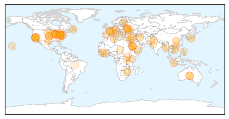
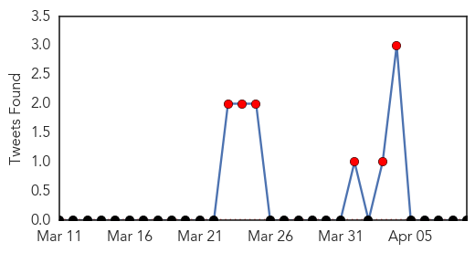
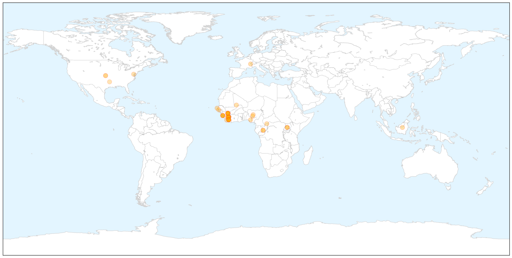
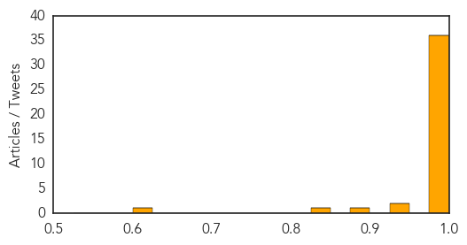

Unknown
30-Day Web Trend
0 alerts, 0 warnings

30-Day Twitter Trend
0 alerts, 0 warnings

Article Locations

Article Confidences

Top Articles:
- 0.999
- Saudi records 11 cases of MERS virus in Jeddah
- 0.998
- Farsnews
- 0.998
- MERS virus kills 67th person in Saudi Arabia
- 0.994
- Saudi emergency dept closed amid MERS outbreak
- 0.973
- Guinea-worm Disease Set to Bow Out as Public Health Threat in Africa - World
- 0.944
- Progress mixed on hospital infections
- 0.917
- Chicago Tribune
- 0.917
- Chicago Tribune
- 0.917
- Chicago Tribune
- 0.917
- Chicago Tribune
- 0.917
- Chicago Tribune
- 0.917
- Chicago Tribune
- 0.917
- Chicago Tribune
- 0.917
- Chicago Tribune
- 0.917
- Chicago Tribune
- 0.917
- Chicago Tribune
- 0.917
- Chicago Tribune
- 0.917
- Chicago Tribune
- 0.916
- Avian Flu Scan for Apr 09, 2014
- 0.910
- The world windows to Thailand
- 0.896
- الاخبار المصورة
- 0.887
- ABC Rural (Australian Broadcasting Corporation)
- 0.881
- The Enemy Within: Tackling Schistosomiasis in Yemen - Yemen
- 0.870
- Germs' DNA decoded to fight food poisoning Republican American
- 0.870
- SD veterinarian prepares horse owners for virus
- 0.866
- Student charged as adult in Pennsylvania stabbing rampage -police
- 0.866
- Top Russian, U.S. diplomats talk twice in one day about Ukraine
- 0.866
- The unveiled Solar Impulse II aircraft is seen at their base in Payerne
- 0.866
- Swiss Defence Minister Maurer speaks during the official unveiling ceremony of the Solar Impulse II aircraft at their base in Payerne
- 0.866
- File photo of workers installing 320 square metres of solar panels on roof of farmstead barn in Binsham
- 0.866
- Russia says West, Ukraine need not worry about troops near border
- 0.859
- San Antonio Syphilis Cases ‘Alarmingly High’
- 0.843
- Thorold Niagara News
- 0.843
- 'It’s an epidemic'
- 0.832
- Norovirus Affects Passengers, Crew on Cruise Ship Off Santa Barbara
- 0.826
- Review of foodborne illness in America
- 0.755
- KRNV, Reno, NV
- 0.734
- Dr. Michael Aiello Recognizes Cancer Control Month by Raising Awareness of the Connection Between Cancer and Gum Disease in Sterling Heights, MI
- 0.728
- Pink eye shuts down America Samoa
- 0.694
- Treliske and Derriford breached targets
- 0.694
- Vietnam hospital lab awarded international accreditation
- 0.675
- UN accused of 'shameful attitude' in S Sudan
- 0.671
- Bacon Prices Rise as US Pork Production Threatened by Deadly Virus
- 0.670
- World Health Day conference on One Health
- 0.660
- Posting criteria violations rampant in health department
- 0.654
- UN Rejects Aid Agency Criticism of South Sudan Mission
- 0.649
- Water of major concern in Solomon Islands
- 0.648
- Chronic malnutrition dogs Côte d’Ivoire’s north - Côte d'Ivoire
- 0.638
- DCMH nurse delivers healthcare, spiritual care
- 0.602
- Confinement of contagious TB patient sought
Showing top 50 articles...
Top Tweets:
-
No tweets found for Apr 09, 2014
Ebola
30-Day Web Trend
20 alerts, 0 warnings

30-Day Twitter Trend
6 alerts, 0 warnings

Article Locations

X

Article Confidences
Top Articles:
- 1.000
- Ebola outbreak could last months in West Africa, officials say
- 1.000
- WHO raises concerns over Ebola outbreak
- 1.000
- ‘West Africa Ebola outbreak among most challenging ever’ – BorneoPost Online
- 1.000
- Kenya : Government cautious of possible Ebola penetration to the country
- 1.000
- WHO officials say deadly West Africa Ebola outbreak could last months
- 1.000
- Ebola outbreak could last months Republican American
- 1.000
- The Portland Press Herald / Maine Sunday Telegram
- 1.000
- Nigerian Government raises alert on Ebola virus
- 1.000
- As Ebola spreads in Africa, how worried should West be?
- 1.000
- Fighting and Eradicating Ebola in West Africa Could Take Months, No Travel Restrictions Yet to Guinea – WHO
- 1.000
- Guinea's first Ebola survivors return home
- 1.000
- Ebola outbreak in W Africa to last for months
- 1.000
- Ebola outbreak may last months
- 1.000
- WHO: Ebola outbreak one of ‘most challenging’
- 1.000
- UN & health partners work to slow Ebola outbreak in West Africa
- 1.000
- 'Most challenging' deadly disease outbreak
- 1.000
- The Ebola Outbreak 3 Weeks In: Dire But Not Hopeless
- 1.000
- iafrica.com West Africa braces against Ebola
- 1.000
- Guinea raises Ebola death toll to 95 (Update)
- 1.000
- 'Ebola outbreak most challenging ever'
- 0.999
- Guinea's first Ebola survivors return to family, stigma remains
- 0.999
- Ebola spreads in West Africa -- NationNews Barbados -- Local, Regional and International News nationnews.com
- 0.999
- Ebola death toll in West Africa rises to 106
- 0.999
- Guinea's first Ebola survivors return to family, stigma remains
- 0.998
- The Big Read: Escape from grip of Ebola
- 0.998
- Ebola has infected nearly 200 people in Guinea and Liberia, WHO fears
- 0.998
- WHO Working on Containing the Spread of Ebola Virus and Rumours of Fictitious Cure
- 0.998
- First Ebola cases suspected in Mali; regional death toll tops 90
- 0.998
- Ebola expected to terrorise West Africa for ‘months’ – WHO
- 0.998
- Atiku seeks proactive measures
- 0.997
- UPDATE 1-Scale of Guinea's Ebola epidemic unprecedented -aid agency
- 0.995
- UPDATE 2-Mob attacks Ebola treatment centre in Guinea, suspected cases reach Mali
- 0.992
- The World On Arirang
- 0.990
- Samaritan's Purse takes precautions but keeps workers on front lines to fight Ebola
- 0.989
- UNICEF-Liberia Ebola Outbreak: SitRep #13, 9 April 2014 - Liberia
- 0.984
- Mali suspects first Ebola cases as regional death toll tops 90
- 0.947
- PostBulletin.com
- 0.935
- NMA Bemoans Dwindling Budgetary Allocation to Health Sector, Articles
- 0.882
- Officials say outbreak could last for months
- 0.843
- Health Highlights: April 9, 2014
- 0.611
- Biohacking and the problem of bioterrorism
Top Tweets:
-
No tweets found for Apr 09, 2014